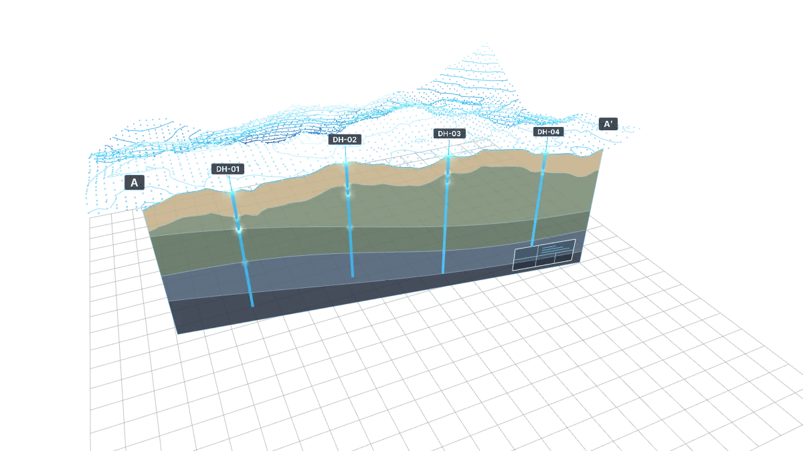
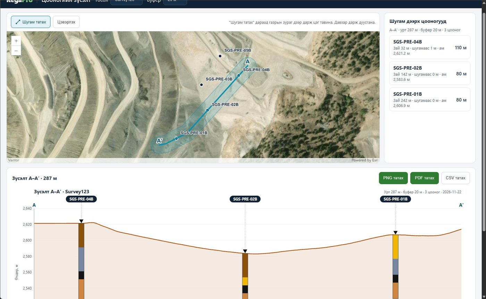
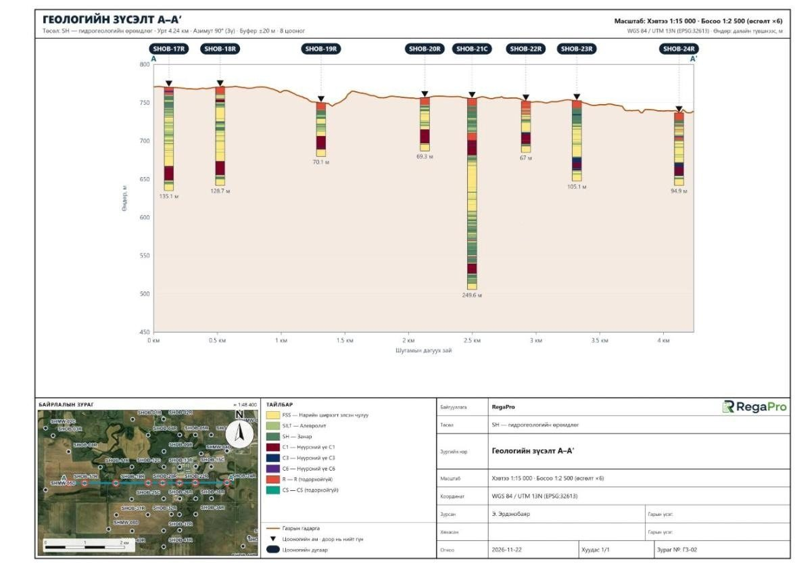
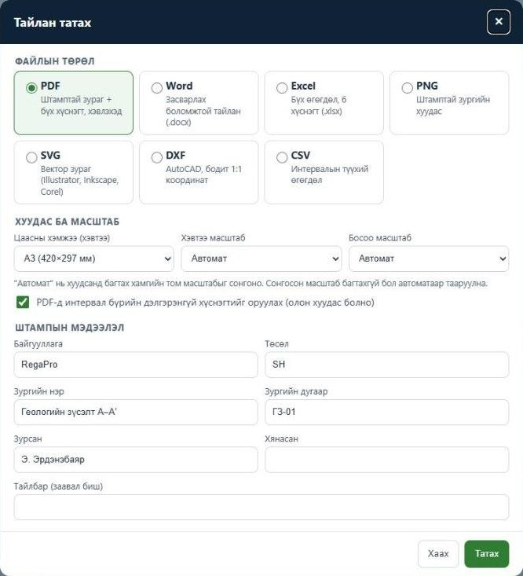

ШтампA3 · A4
Байгууллага, төсөл, зургийн нэр, дугаар, зурсан, хянасан хүн, огноо, лого.
ArcGIS · Цооногийн зүсэлт
ArcGIS-ийн бэлэн хэрэгслээр цооногийн дугаартай зүсэлт, штамптай тайлан гаргах боломжгүй байсан. RegaPro-гийн зүсэлтийн хуудас ArcGIS Online дахь цооног, литологийн өгөгдлөөс таны татсан шугамын дагуух геологийн зүсэлтийг автоматаар зурж, PDF, Word, Excel, AutoCAD зэрэг 7 төрлийн файлаар тайлан гаргана.

Ажлын урсгал
ArcGIS апп дээрх «Зүсэлт хийх» товчоор тухайн төслийн зүсэлтийн хуудас нээгдэнэ.
Газрын зураг дээр 2 ба түүнээс олон цэг тавьж зүсэлтийн шугамаа татна. Буферийн өргөнийг сонгоно.
Буферт орсон цооногууд шугам дээр буулгагдаж, дугаар, литологи, газрын гадаргын профайлтай зүсэлт автоматаар зурагдана.
Байгууллага, төсөл, зурсан, хянасан хүний мэдээлэл, цаасны хэмжээ, масштабаа сонгоно. Мэдээлэл дараагийн удаа хадгалагдана.
PDF, Word, Excel, PNG, SVG, DXF, CSV-ээс сонгоод нэг товчоор тайлангаа татна.
Гидрогеологийн өрөмдлөгийн төслийн 7 цооногоор татсан 4.12 км урт зүсэлт ба түүний тайлан.



| Шаардлага | ArcGIS дангаараа | RegaPro-той |
|---|---|---|
| Цооногийн дугаар | Харагдахгүй | Багана бүрийн дээр |
| Штамп, масштаб, сум | Байхгүй | Автоматаар |
| Татах файл | Зөвхөн CSV | 7 төрөл |
| Тайлан бэлдэх | Гараар | 1–13 секунд |
Өгөгдөл ArcGIS Online дээрээ хаалттай хэвээр. Тооцоолол хэрэглэгчийн хөтөч дээр хийгдэнэ.
Видео
Бодит төслийн өгөгдөл дээр бичсэн дэлгэцийн бичлэг, монгол, англи хэлний танилцуулга.
Геологийн зурагт шаардлагатай бүх элемент автоматаар нэмэгдэнэ
Байгууллага, төсөл, зургийн нэр, дугаар, зурсан, хянасан хүн, огноо, лого.
Хэвтээ, босоо масштаб (босоо өсгөлттэй), масштабын шугам, хойд зүгийн сум.
Хиймэл дагуулын зураг дээр зүсэлтийн шугам, буфер, цооногууд, A–A′ цэгүүд.
Ерөнхий мэдээлэл, цооногийн жагсаалт, литологийн нэгтгэл, интервал бүрийн дэлгэрэнгүй.
Танай ArcGIS Online дахь цооног, литологийн давхаргад холбож, зүсэлтийн хуудсыг тохируулж өгнө. Өгөгдөл тань ArcGIS дээрээ хаалттай хэвээр үлдэнэ.